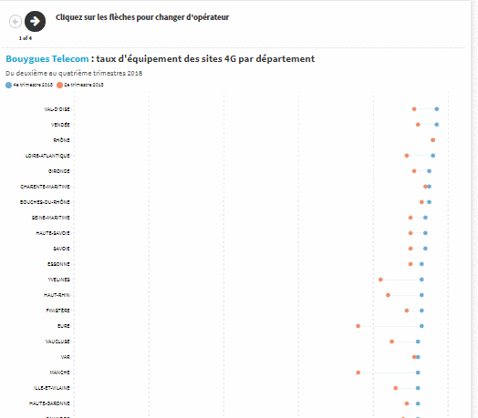
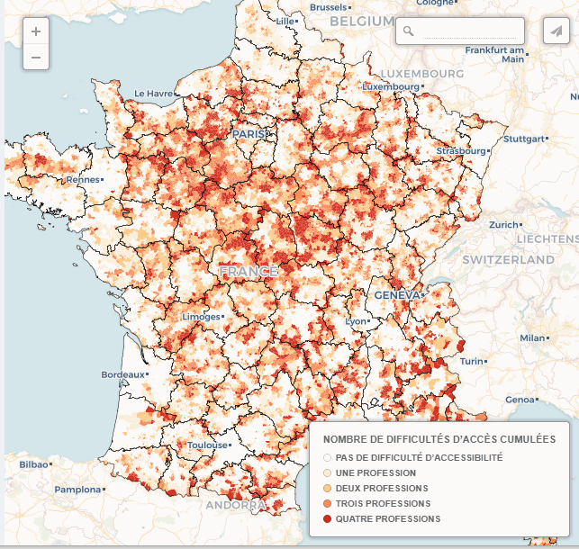
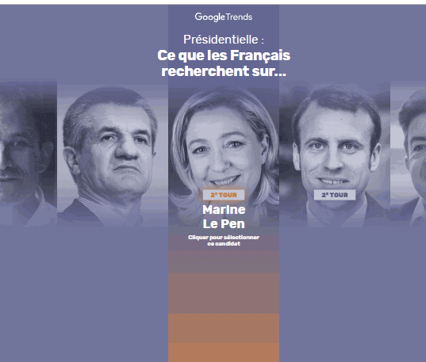
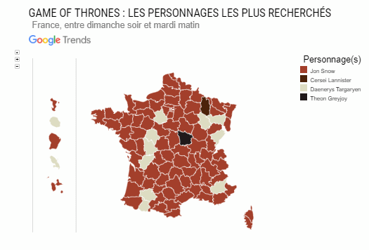
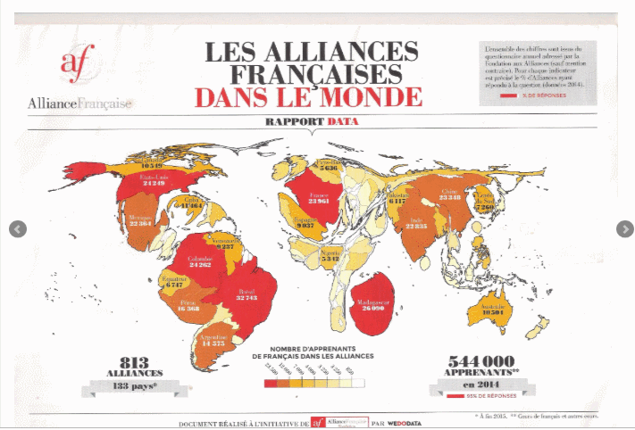
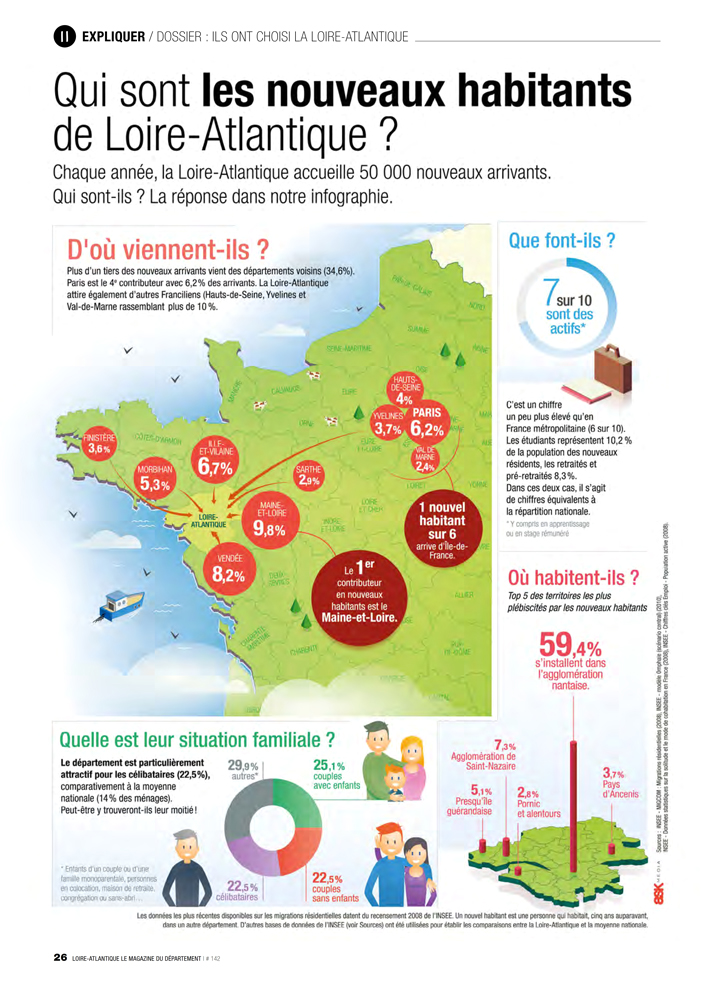
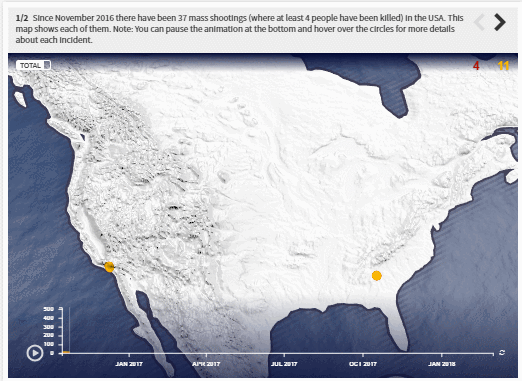

Portfolio
-
La Gazette des communes
- Documentation technique de plus de 100 indicateurs Open Data
- Management d'équipe (un développeur front end et un développeur back end
- Analyse exploratoire de données
- Rédaction d'articles
-


- Analyse des données (R)
- Visualisation de données et cartographies (Carto et QGis)
-

- Analyse des données (R)
- Visualisation de données (Datawrapper) et cartographie (Carto)
-
Polygraph

- Conception éditoriale
- Modélisation des données (API Google Trends et R)
- Management des communications et de la localisation à 6 langues
-
Google News Lab

- Gestion du projet
- Conception éditoriale
- Extraction et mise à jour quotidienne des données (R et CronJob linux)

- Code et exécution (JavaScript et JQuery)
- Extraction et mise à jour quotidienne des données (R et CronJob linux)
-
-
Wedodata

- Recherche d’angles data pour les infographies
- Scrapping et analyse des données (R)
-

- Récollection et nettoyage des données (Open Refine)
- Analyse des données (R)
-

- Mise en place d’une base de données des 100 plus gros recruteurs en France
- Fact checking des données à partir des rapports officiels
-
AskMedia

- Recherche et analyse des données
- Angles data
-
Sciences Po

- 1er prix de l’innovation en journalisme Google | Sciences Po 2014
- Gestion de projet
- Analyse des données
Projets individuels

- Scrapping et analyse des données (R)
- Data Vizualisation (Flourish)
-

- Scrapping et analyse des données (R)
- Data Vizualisation (Flourish)